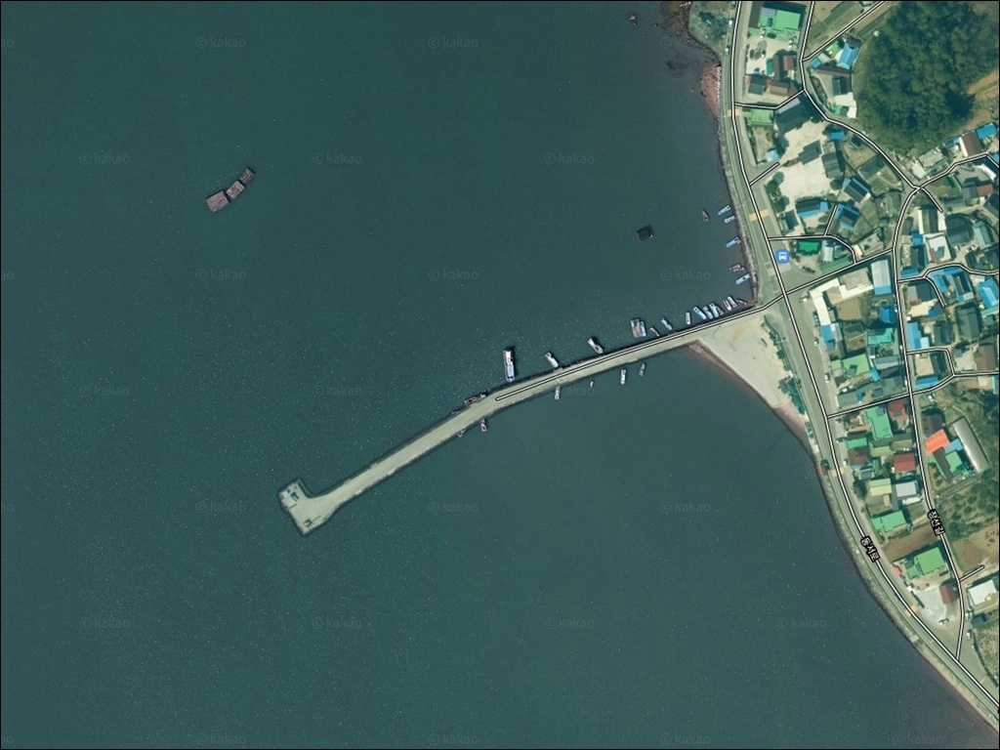
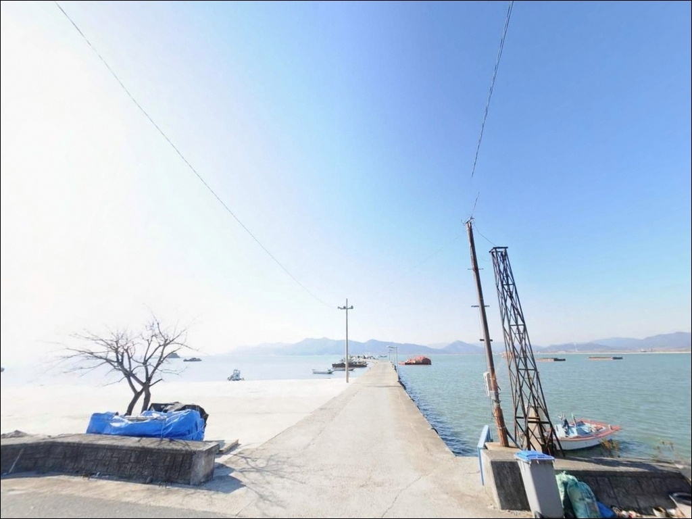
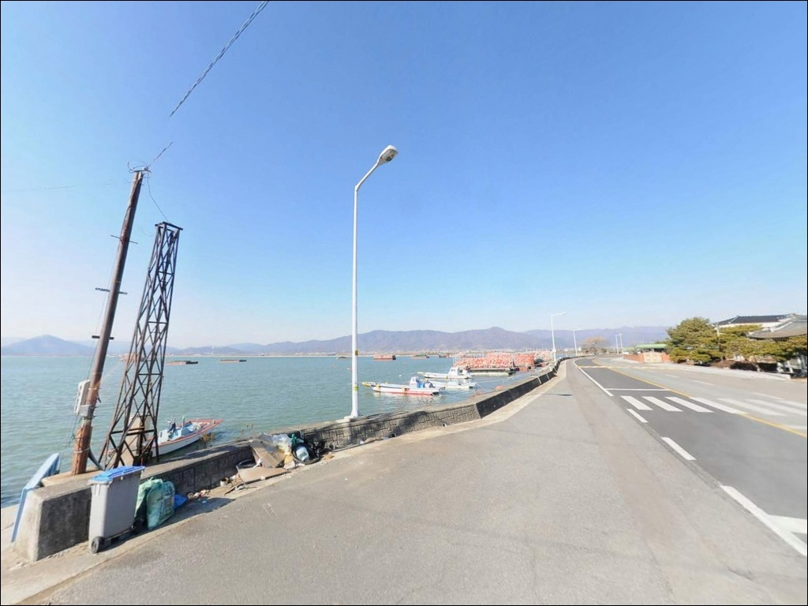
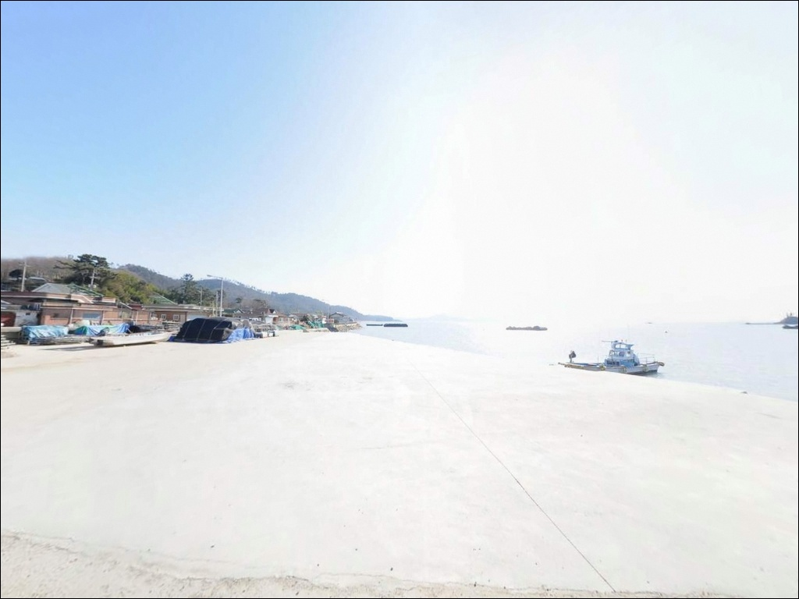
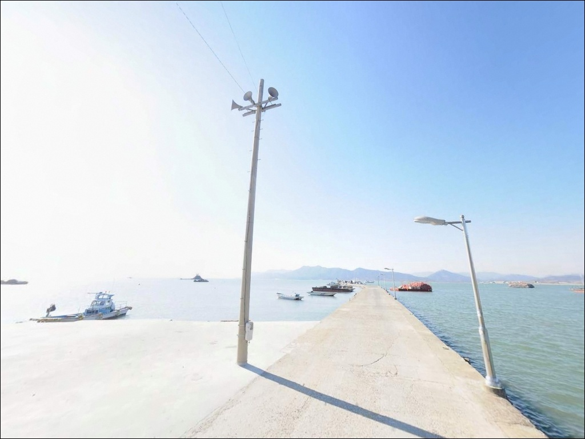
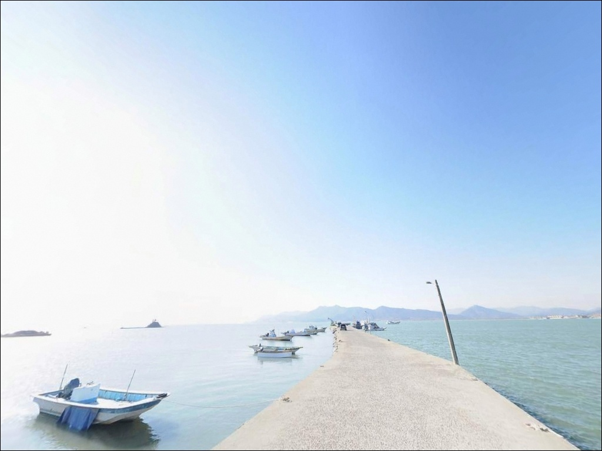
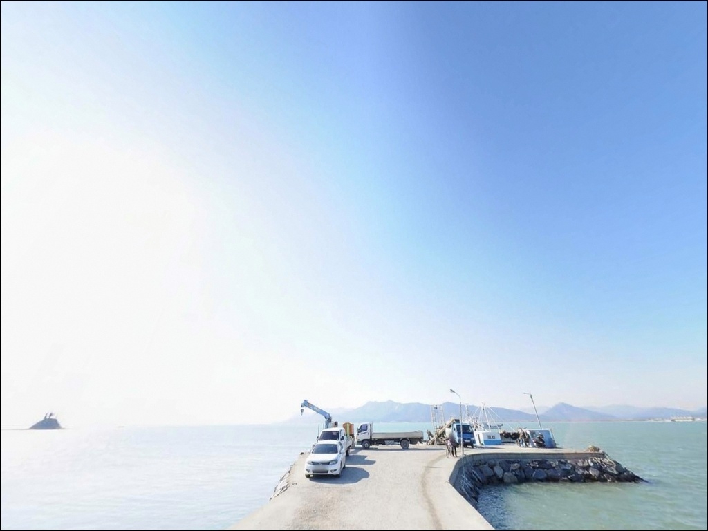
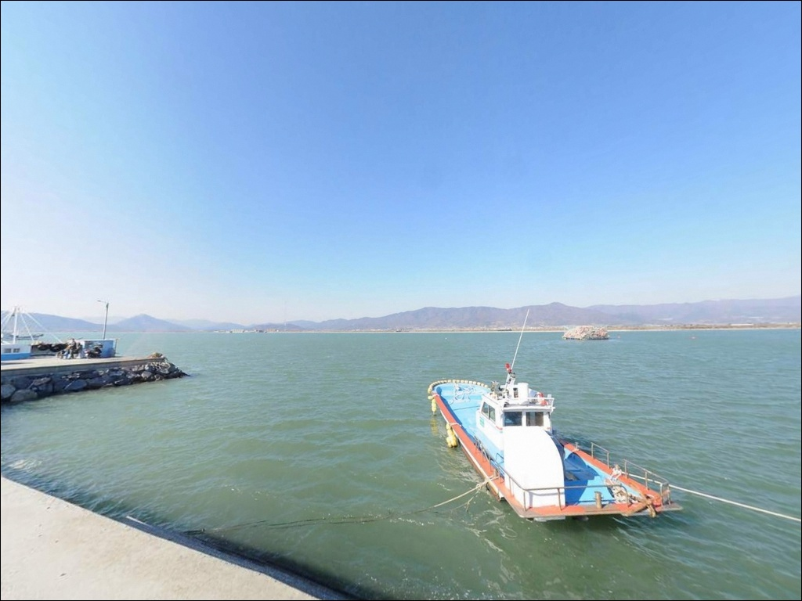
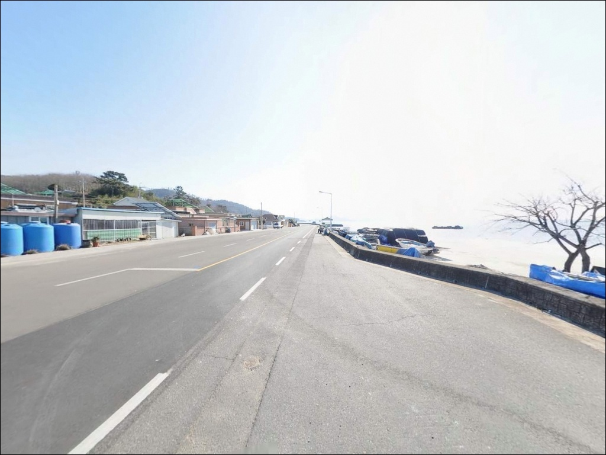

장선포, 전남 고흥군 가슴이 뻥 뚫리는 해안 절벽 차박 낚시 포인트
이 페이지에는 광고(제휴 링크 포함)가 있으며, 광고 링크를 통해 구매하면 운영자가 판매 수익 또는 수수료를 받을 수 있습니다. 포인트 사진: 카카오맵 스카이뷰·로드뷰. 이 페이지의 지도·사진 이미지는 카카오맵의 실제 서비스 이미지와 다를 수 있습니다.


포인트 안내
장선포
전남 고흥군 대서면 안남리 1630
득량만 내만 갯벌 포인트에서
물때를 놓치면 선착장 전면부가 얕아져
어떤 채비로도 낚시 여건을 확보하기 어렵습니다.
장선포는 조석간만의 차가 크고
간조 시 전면 갯벌이 넓게 드러나는 구조로,
만조 전후 시간대를 계산하고 출발하는 것이
방문 성패를 가르는 기본 조건입니다.
전남 고흥군 대서면 안남리,
장선해변과 나란히 자리한 이 소형 선착장은
득량만 동쪽 내만권에 위치하며
서쪽 방향 내만을 향해 뻗은 구조입니다.
장선도와 육지 사이 노두길이 형성된
조용한 어촌 포인트로,
원투낚시 중심의 생활낚시에
잘 맞는 지형 조건을 갖추고 있습니다.
이 글은 장선포의 진입 동선,
차박 체류 여건, 물때 판단 기준,
낚시 스타일별 공략 조건에 집중합니다.
조황 단정이나 특정 어종 보장은
이 글의 범위에 포함되지 않습니다.

1. 포인트 위치 및 진입 동선 분석
장선포는 대서면 면 소재지인 금마리에서
안남리 방면으로 이어지는 도로를 통해 접근합니다.
면 소재지까지의 진입로는
2차선으로 확장된 포장도로가 연결되어 있으며,
안남리 마을 안쪽 구간은
1.5차선 수준의 좁은 마을길이 남아 있습니다.
대형 캠핑카나 대형 SUV 차량이라면
마을 입구에서 회차 가능 여부를 먼저 확인하고
진입하는 것이 안전합니다.
소형~중형 차량 기준으로는
선착장까지 직접 진입이 가능하며,
선착장 앞 공터와 장선해변 인근 주차 공간에서
차량 회차와 주차가 가능합니다.
선착장 끝단까지 차량 진입 자체는 가능하나
발판 폭이 좁으므로
초행이라면 선착장 입구 공터에서 주차하고
걸어서 이동하는 편이 무리가 없습니다.

2. 차박 환경 평가 및 야간 체류 여건
안남리는 민가 밀집도가 낮은 소규모 어촌 마을입니다.
서쪽 내만을 향한 지형 특성상
외부 광원이 적고 야간 차량 통행 빈도도 낮아
프라이버시는 양호한 편입니다.
서쪽 방향을 바라보는 구조여서
일몰 조망이 뛰어난 것도 이 포인트의 특징입니다.
득량만 내만 구조로 외해 파도와 강풍 노출이 낮아
바람 영향은 비교적 적습니다.
선착장 입구와 마을 부근에 가로등이 일부 있으나
선착장 끝단으로 갈수록 광량이 줄어드는 편이라
개인 헤드랜턴은 필수입니다.
차박 거점으로는 장선해변 인근 주차 공간이 적합합니다.
평탄하고 넓은 주차 공간이 확보되어 있어
낚시를 마치고 하룻밤 머무는 용도로
무리 없이 활용할 수 있는 구조입니다.
다만 민가와 인접한 구간에서는
야간 소음을 최소화하는 기본 매너가 필요합니다.


3. 주변 편의시설 및 인프라 현황
장선포 반경 2~3km 거리에
대서면 소재지 금마리가 자리하고 있습니다.
농협 하나로마트와 주유소, 식당가를
이 동선에서 이용할 수 있어
식수·얼음·낚시 소품을 출발 전에 갖춰두면
현장 대응이 수월합니다.
장선포 이름을 공유하는 공중화장실이
안남리 산159 지번에 설치되어 있어
기본 위생 시설은 인근에서 이용할 수 있습니다.
다만 편의점이나 전문 낚시점은
반경 3km 이내에서 기대하기 어려우므로
소품과 채비는 출발 전에 완비하는 것이 기본입니다.

4. 물때를 맞춰야만 낚시가 되는 득량만 갯벌 구조
장선포 방문 전에 가장 먼저 확인해야 할 것은
물때입니다.
득량만은 고흥반도·보성군·장흥군으로 둘러싸인
폐쇄형 내만으로 조석간만의 차가 크게 나타납니다.
간조 시에는 선착장 전면부 갯벌이 넓게 드러나
낚시 자체가 불가능해지는 상황이 됩니다.
물때란 조석간만에 따라 밀물과 썰물이
반복되는 주기를 말하며,
내만 갯벌 포인트에서는 이 타이밍이
낚시 가능 여부 자체를 결정합니다.
바다타임에서 대서면 안남리 기준 물때를 확인하고,
만조 전후 2시간을 노려
출발 시각을 맞추는 것이 기본 전략입니다.
갯벌 지형 특성상 썰물 시 선착장 경사면이
미끄러울 수 있으므로
물이 빠지는 시간대에는 선착장 진입을 자제합니다.
노두길은 만조 시 침수되는 구조이므로
노두길을 건넌 뒤에는 밀물 속도도 함께 확인해야 합니다.
채비는 뻘 바닥 특성상 밑걸림이 비교적 적어
여분을 많이 준비할 필요는 낮은 편입니다.

5. 지형 기반 낚시 여건 분석
장선포의 핵심 지형 특성은
득량만 내만권의 뻘 바닥 구조입니다.
전형적인 갯벌 지형으로 여밭이나 암반이 드물어
밑걸림이 적고 원투낚시에 최적화된 바닥 상태입니다.
만조 기준 선착장 끝단 수심은
약 3~5m 내외로 추정됩니다.
선착장 전면에는 장선도가 위치하며
육지와 415m 노두길로 연결된 구조입니다.
장선도와 선착장 사이 수로 입구는
조류 흐름이 집중되는 구간으로
상대적으로 수심이 유지되는 핵심 포인트입니다.
들물에 물골 방향을 노리는 방식이 이 지형에 잘 맞습니다.
밑걸림이 적은 뻘 바닥은 채비 손실이 줄어드는 조건으로,
원투낚시에 집중하기 좋은 지형적 장점입니다.
내만 구조로 파도와 강풍 노출이 낮아
채비 운용이 비교적 안정적인 편이며,
조류 방향과 물때 파악이 조과를 가르는
핵심 변수입니다.
출조 전에 장선포·대서면 일대 최신 조황을
반드시 검색해 보시기 바랍니다.


6. 포인트에 적합한 낚시 스타일 제안
장선포에서 가장 잘 맞는 낚시 방식은
원투낚시입니다.
뻘 바닥이 넓게 이어지는 지형에서
80m 이상 장거리 캐스팅으로
물골 방향을 노리는 방식이 유리합니다.
붕장어, 숭어, 보리멸, 도다리 등
이 해역에서 기대해 볼 수 있는 어종이
갯벌 바닥을 중심으로 분포합니다.
루어와 소프트루어도 병행할 만합니다.
썰물 직전·후 물골 주변에서
갑오징어, 낙지, 주꾸미를 노리는 방식이 어울리며,
득량만 내만권은 두족류 서식 밀도가 높은 해역으로
봄에서 가을까지 시즌이 이어지는 편입니다.
소프트루어 채비로 물골과 선착장 경계부를
천천히 탐색하는 방식이 효과적입니다.
찌낚시는 선착장 끝단과 노두길 주변 수로 경계부에서
물때가 맞을 때 운용할 수 있습니다.
내만 지형 특성상 조류 흐름이 완만하여
찌를 태우기 어려운 상황이 생길 수 있어
원투낚시를 메인으로 두고
찌낚시는 보조 스타일로 운용하는 방식이
현실적입니다.

7. 대안 포인트 및 플랜 B 동선
장선포 여건이 여의치 않을 때
가장 먼저 이동할 수 있는 곳은
같은 안남리 해안선 안에 있는
수문동선착장입니다.
득량만 동일 해역을 공유하는 지형으로
물때와 조류 패턴이 유사해
같은 채비로 공략이 가능합니다.
안남리 해안선을 따라
장사마을 선착장, 안남리 선착장,
대전해수욕장이 차량으로 수 분 거리에
연속으로 배치되어 있습니다.
파도나 바람 조건이 불리하거나
자리 여건이 맞지 않을 때
이 해안선 내에서 이동하며 탐색하는
방식이 이 권역에서의 기본 동선입니다.
차박 대체 후보로는 장선해수욕장 주차장이
장선포에서 차량으로 5분 거리에 있습니다.
주차 공간이 넓고 평탄하며
공중화장실 접근성도 더 유리한 편이라
장선포 본 포인트 여건이 맞지 않을 때
차박 거점을 옮기기 좋은 선택지입니다.

물때 하나 맞추면
장선포는 조용하고 넉넉한 포인트입니다
원투낚시를 즐기는 낚시인이라면
장선포의 뻘 바닥 지형은
채비 손실 걱정 없이 집중하기 좋은 구조입니다.
두족류 시즌을 노리는 낚시인에게도
득량만 내만의 지형 조건은
충분히 기대해 볼 수 있는 환경을 갖추고 있습니다.
반면 물때 계산 없이 간조에 도착하거나
주변 편의시설에 의존해 진입하는 방문자에게는
준비 부족이 바로 드러나는 포인트이기도 합니다.
물때 확인, 자급 준비, 마을길 진입로 점검,
이 세 가지를 갖추고 출발한다면
조용하고 넉넉한 시간을 보낼 수 있습니다.
서쪽 내만을 바라보며
만조 타이밍에 원투채비를 날리고
썰물에 차 안에서 일몰을 기다리는 동선은,
낚시와 차박을 하나로 묶어
장선포를 제대로 활용하는 방식입니다.